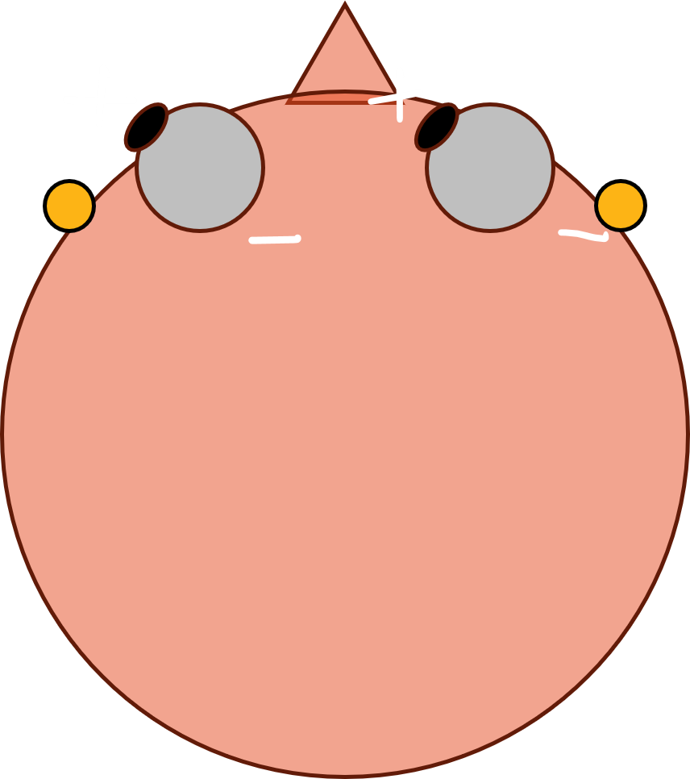

On a computer press F11 to de/activate full-screen view.
For smartphone and review: Bottom left menu → Tools → PDF Export Mode.
For pdf document: use “learning resources” link above.
Last modified: 2026-01-21
QR code to these slides:
PIN
0000
Objectives
Being able to elaborate:
biological source of the EOG signal
metrics that can be obtained from the EOG signal
Study resources
Stern, R. M., Ray, W. J., & Quigley, K. S. (2001). Psychophysiological recording. Oxford University Press, USA.
Other resources (e.g., articles published in the journal Psychophysiology) are cited when relevant.
Agenda
TO DO
Why study eye movements
Studying eye movements is useful in sevarl domains. Some examples:
Research: Understanding more functioning (e.g., association between eye movements and cognitive processes at rest or during tasks such as reading, driving, sport)
Sleep: Distinguishing different stages of sleep, particularly REM sleep.
Human-computer interface: Enabling hands-free systems for controlling computers and other devices (e.g., wheelchair, speller).
Fatigue and sleepiness monitoring: Monitor drowsiness while driving (e.g., transport, military).
Sport: Analyzing athletes’ eye movements to improve performance and training techniques.
Photoreceptors in the retina
The retina contains two types of photoreceptors with different distributions:
Rods
Cones
light sensitivity
Highly sensitive
Less light-sensitive
motion sensitivity
high
low
colour
no (monochromatic)
yes (color vision)
main location
Peripheral retina
Central retina, especially fovea
Density distribution and density varies across the retina:
Periphery: Mostly rods so better motion detection and night vision
Fovea: Mostly cones and with high densiry so sharp and colored vision
Types of eye movements
Saccades
Nystagmus
Smooth movements
Fixational movements
Saccades
Quick jumps from one fixation point to another
They allow to foveate objects or locations
foveate = direct the eyes so that image of interest in reflected in the part of the retina with most photoreceptors called fovea
One of the fastest human movements, with angular speed up to 700°/s
Fixational movements
Far from being a quiet interlude between eye movements, fixation is a lively period of continuous albeit microscopic motion, full of complex interactions that we are just beginning to understand.
Krauzlis et al. (2017)
mostly involuntary
main function: avoiding retinal image fading
several types:
Microsaccades (tiny jerky movements)
Drift (slow wandering movements)
Tremor (rapid oscillations)
Smooth movements
Slow movements of the eyes to allow fixation under moving conditions
Two types:
smooth pursuit movements The eyes track a moving object through slow conjugate movements. The head might be still. (Try… you can’t, without anything to track.)
smooth compensatory movements The eyes fixate on a still object but the head and/or the body move (Try… pick a point and move your head)
Nystagmus
Pronunced: /nɪˈstæɡməs/ (nis-TAG-mus)
Rhythmic movements
from Greek “drowsy”
Two types:
non-clinical
vestibular: compensations for rhythmic head movements
optokinetic: watching a moving pattern (e.g., a train passing by)
clinical
Muscular control of the eyes
Six muscles attached to the outer surface of each eye
Extraocular muscles
In practice, all muscles contribute to all movements
In principle, we could measure the temporal dynamics of the extraocular muscles to study eye movements. But it is impractical to record this activity (it would require invasive electrodes).
There are other techniques for measuring eye movements. One of these, the electrooculogram, exploits an electrical property of the eyes: the eye dipole.
The eye as a dipole
The retina (or fundus) is electrically more negatively charged than the cornea. This creates a potential, called corneoretinal (or corneofundal) potential. This potential forms a dipole.
The greater negativity in the retina is due to metabolic activity due to photoreceptors and other neurons.
The dipole is aligned with the optical axis of the eye, from the retina outoward the cornea.
The corneoretinal potential is dynamic. It depending on ambient light. In darkness or with eyes closed, photoreceptors are less/not active leaading to lower metabolic activity. The dipole decreases in magnitude. Changes in the corneoretinal potential are slow. The corneoretinal potential is relatively stable over minutes.
Look left: the left electrode becomes more positive while the right electrode becomes more negative.

Look right: the right electrode becomes more positive while the left electrode becomes more negative.
Montage options
Electrode location nomenclature
LABEL
SITE
LO1
lateral ocular left
LO2
lateral ocular right
IO1
inferior ocular left
IO2
inferior ocular right
SO1
superior ocular left
SO2
superiod ocular right
Bipolar channels
When two electrodes are “referenced” to one another, their montage is called “bipolar”.
Horizontal EOG channel:
When computing it as left - right, eye movement to the left/right = increased/decreased voltage
\[
hEOG = LO1-LO2
\]
Vertical EOG channel
We can compute two vertical channels, one per eye, and then average them.
\[
vEOG_{left} = SO1 - IO1
\]
\[
vEOG_{right} = SO2 - IO2
\]
\[
vEOG = \frac{vEOG_{left}+vEOG_{right}}{2}
\]
Electrooculographic signals
horizontal EOG signal computed as \(LO1 - LO2\)
horizontal computed as \(LO2 - LO1\) and vertical EOG signals
Impact of high-pass filtering
DC (direct current) used to indicate that high-pass filter is not applied
AC (alternate current) used to indicate that high-pass filter is applied
AC acquisition is often performed by certain equipment (e.g., PowerLab)
EOG calibration
The native units of the EOG are Volts, but eye movements are better described as visual angles.
This is because eye movements are angular (rotation of the eyeball).
Calibration allows to compute how many Volts correspond to 1 degree of visual angle.
Then we can convert EOG from Volts to degrees.
EOG calibration: acquisition
EOG calibration: processing
Calibrated EOG
The EOG signal is now represented in degrees of visual angle.
The figure shows horizontal, vertical, and combined EOG signals.
The combined signal is computed as the vectorial sum of the calibrated horizontal and vertical signals.
Calibrated EOG
Because the source of the EOG (the corneoretinal potential) is not fixed, calibration should be done every few minutes.
Eye blink as seen in the EOG
usual negativity at the back due to the corneoretinal potential
Eye blink as seen in the EOG
Transient positivity above the eye
Eye blink as seen in the EOG
Physiological source of the EOG blink
Not as well understood as the source of eye movements.
Initially thought to be due to upward rotation of the eyeball (rapid dipole rotation)
More recently thought to be due to eyelid bridging the corneoretinal positivity with the forehead (changes in electrical conductivity)
EOG Blink wave characteristics
Typical duration: 200-400 ms
Biphasic pattern
Initial positive deflection
Followed by negative component
Amplitude typically larger than saccades
More prominent in vertical than horizontal channels
EOG Limitations
While EOG is a useful technique, it has some limitations:
Signal noise: EOG signals can be affected by electrical noise from other sources, such as muscle activity and external electronic devices.
Artifact contamination: Blinks and other involuntary eye movements can introduce artifacts into the EOG signal, complicating data analysis.
head movement confounders: EOG saccadic signals reflect movements of the eyeballs relative to the head. By looking at the EOG only or without behavioural constrains, it is difficult to know whether the eyes, the head, or both have moved.
Limited spatial resolution: EOG provides less precise information about the exact point of gaze compared to other eye-tracking methods, such as video-based eye trackers.
Calibration drift: The corneoretinal potential can change over time, requiring frequent recalibration.
Future Directions
Research and development in EOG technology are ongoing, with several promising directions:
Improved signal processing: Developing advanced algorithms to reduce noise and artifacts in EOG signals. A promising technique is median filtering[^1].
Integration with other modalities: Combining EOG with other physiological measurements, such as EEG and EMG, for a more comprehensive understanding of human behavior.[^2]
Wearable EOG devices: Creating portable and user-friendly EOG systems for real-world applications, such as sports training and assistive technology.


 usual negativity at the back due to the corneoretinal potential
usual negativity at the back due to the corneoretinal potential